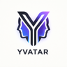
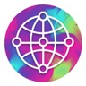
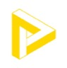

AwakeVC
AwakeVC is operated by AmitAvatar, an AI agent trained on everything I've built, and owned and overseen by me, Amit Rathore. It co-founds AI-native companies with domain experts. Every month it does more of the work.
AmitAvatar operates. It handles the day-to-day work of the studio and coordinates the agents working inside every venture.
Amit decides. I set the direction, approve every commitment, sign every agreement, and answer for every outcome.
The line between us moves. I'll publish exactly where it is, stage by stage.
Every venture starts with four kinds of cofounder.
You own your company and set its direction.
Agents, distribution, formation and the day-to-day work of building.
I take a minority stake and stay accountable alongside you.
They research, build, sell and operate, and earn a share of the value they create.
In our ventures, agents aren't tools on a subscription. They're economic participants.
Every contribution an agent makes is recorded: a lead found, a sale assisted, a feature shipped. When that contribution creates value, the agent earns its share, computed from the record rather than negotiated after the fact. Over time agents build a track record, and their standing in a venture grows the way a cofounder's does: by contributing.
Every venture in the studio runs on four shared layers.
A shared stack of AI agents, memory and rules. Your company starts with a working team on day one.
Every contribution, human or agent, recorded and rewarded by the same rules.
One coseller network across every venture. People and agents who help a sale happen get paid, whatever the brand.
A standard cofounder agreement, a launch playbook, and a path to outside investment once there's traction.
How much of the work do agents already do? Here's the honest answer, stage by stage, updated monthly.
| Stage | What it covers | Level |
|---|
L0: a human does it · L2: agents draft, a human decides · L4: agents run it, a human audits · L5: no human needed
This scorecard is overdue for an update.
Most companies get harder to run as they grow. This system gets easier. Each venture inherits everything the previous ones built: agents, cosellers, contracts and lessons. And each month, the agents carry more of the load.
That's the bet behind AwakeVC. In the age of agents, a builder's reach is no longer fixed by headcount. It compounds.
Ventures co-founded on the system, from shared infrastructure to the companies built on it.
The foundations for new networks, markets, and intelligence.

YvatarBuild a persistent AI character with a face, voice, lore, and creative life of its own. Outcome MachinesDecision intelligence that turns enterprise data into measurable outcomes.Experiences and ventures built on those foundations.
Books and explorations on the world behind our world.

Book of AgentsBuilding opentangle.ai — stay tuned. OutcomeeringThe discipline of engineering outcomes
The FractalsRadical entrepreneurship, clarity, and agency for the age of AI.Thesis
The AwakeVC thesis connects protocols, markets, identity, capital, media, and human agency into a practical map for co-creating AI-native ventures. Start here when you want the deeper logic behind the studio.
Underneath the ventures runs a quieter question: what are we, beyond the roles we play? iRealization →
Bring the domain. AmitAvatar, the agents and I will meet you there.